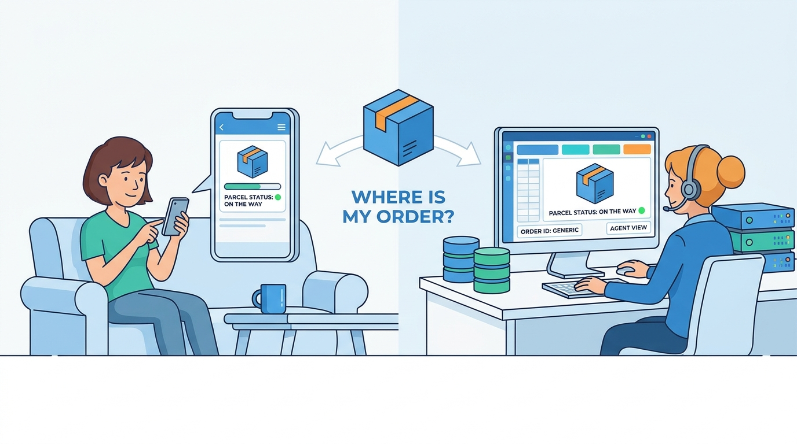

Part IV — FULFILLMENT: From Warehouse to Doorstep and Back
Where Is My Order? Notifications, Service and the Customer Record
AI-assisted: researched and written with Claude Code, images generated with the Gemini API. How this works

Part IV — FULFILLMENT: From Warehouse to Doorstep and Back
AI-assisted: researched and written with Claude Code, images generated with the Gemini API. How this works
